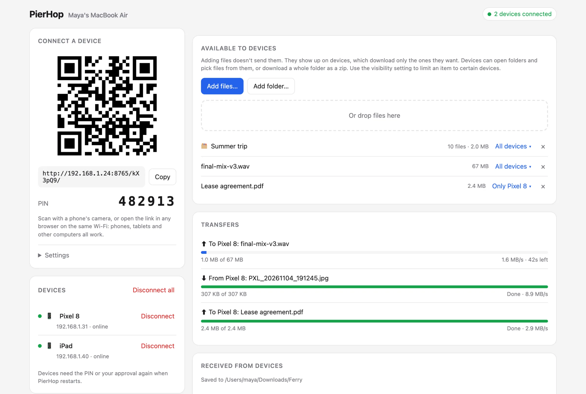
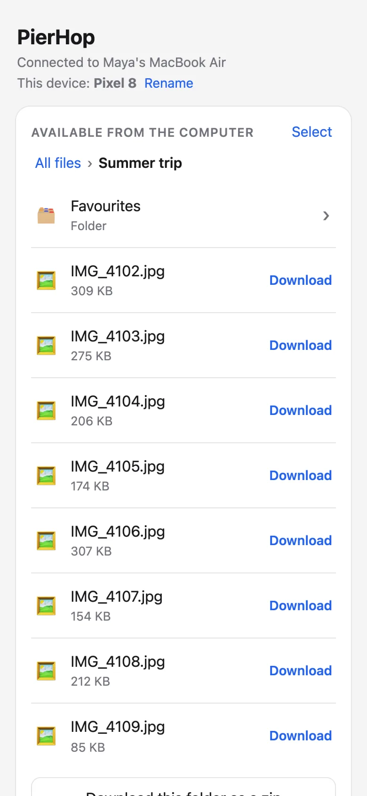
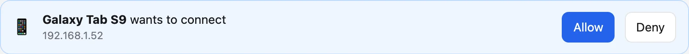
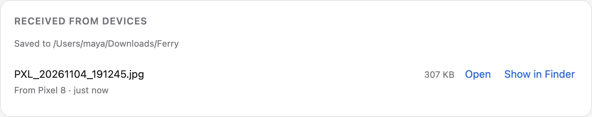

Send files from your Mac to any phone, over Wi-Fi.
PierHop runs on your Mac. Scan its QR code with your phone and download what you need. No app, no account, free.


Your phone sees what you share. Nothing more.
Adding a file on your Mac doesn't send it anywhere. It shows up on your devices, and each one downloads only what it picks.
Open folders, preview, then download
Browse a shared folder like a file manager. Photos, video and music open right in the browser. Take one file, or the whole folder as a zip that starts instantly, even past 4 GB.
Nobody gets in without you
Devices enter a PIN, or you approve each one. Every device has to ask again when PierHop restarts.

Phone to Mac works too
Tap Choose files on the phone. Files land in Downloads, and your Mac shows a notification.

Choose who sees what
Limit any file or folder to specific devices. Everyone else won't see it at all.
Many devices at once
See who's online, rename devices, and disconnect any of them.
Text and links
Paste a link on your Mac and tap it on your phone, or send a note the other way.
Live progress
Every transfer shows its speed and time left, on both ends.
Any browser
Android, iPhone, iPad and other computers all work. Nothing to install on them.
No size limit
Files stream straight from disk, so multi-gigabyte videos and folders are fine.
There is no PierHop server. Files go from your Mac to your phone over your own Wi-Fi, and nothing is uploaded anywhere.
The code is open, so you can check. One honest limit: PierHop uses plain HTTP on your local network, so use it on Wi-Fi you trust, like home or the office. Read the source
-
Install
With pipx, or pip if you prefer.
pipx install pierhoppip install pierhop -
Run
The control page opens in your browser. The first time, macOS asks whether Python may accept incoming connections. Click Allow.
pierhop -
Scan
Point your phone's camera at the QR code and enter the PIN. Then add files or folders on your Mac, and they appear on the phone.
Questions
- Do I need an app on my phone?
- No. The phone opens a link in its browser, whichever one it has.
- Is it really free?
- Yes. PierHop is open source under the MIT license. No premium tier, no account, no ads.
- Do my files go through the internet?
- No. Your devices connect to your Mac directly over your Wi-Fi. There's no server in between.
- Can someone else on my Wi-Fi get in?
- Not without the PIN or your approval. You can see every connected device and disconnect any of them.
- My phone can't open the link.
- Check that both are on the same network, not a guest network, and that the macOS firewall allows Python. A VPN can get in the way too.
- Does it work on Windows?
- Windows PCs can connect like any other device. Running PierHop itself needs macOS or Linux for now.